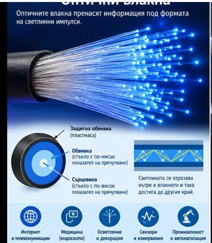
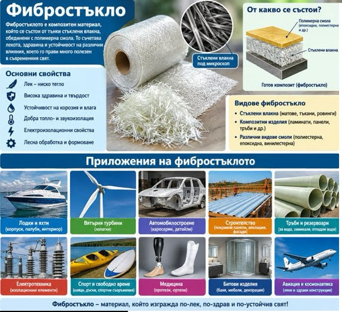

Пълно вътрешно отражение
Миражите
Трудно е да намериш човек, който никога в живота си не е виждал мираж. Милиони хора са наблюдавали в небето причудливи замъци, непознати градове и дори цели армии. Науката има обяснение на този природен феномен, макар че изследването му практически е невъзможно - миражът не възниква по поръчка.
.
Хората са наблюдавали миражи още в древността - за това свидетелстват редица предания и писмени документи. Особено интересни са разказите от Ориента, останали още от времената на Кръстоносните походи. Е, малцина им вярвали, защото рицарите обичали да послъгват.
.
През 1840 г. жителите на малко островче край Северна Англия пък видели в небето прекрасни бели здания. Тъй като постройките силно се различавали от тези в тяхната родина, хората предположили, че Господ им е изпратил хубавата гледка, за да повярват на приказката за финския народ, обитаващ кристален град. Това видение се повторило след 17 години и престояло във въздуха три часа.
.
Като шампион по продължителност и брой на миражите обаче се слави Аляска. Колкото по-силен е студът там, толкова по-ясни и красиви са въздушните видения. Честата поява на миражи на този полуостров е регистрирана едва в началото на XIX в.
.
Тест №18:
.
Зад.1. В кой случай не би настъпило пълно вътрешно отражение?
Зад.2. В кой случай не се използва пълно вътрешно отражение?
Зад.3. Защо не се наблюдава пълно вътрешно отражение на слънчеви лъчи от стъклата на прозорците? Обосновете отговора си.
Зад.4. Защо през лятото асфалтът пред нас изглежда мокър?
Зад.5. Светлинен лъч пада под ъгъл 28° в първата среда. Ъгълът на пречупване е 31°. Определете коя среда е оптически по-плътна.


 .
.